15/08/2022 — Một phụ nữ độ tuổi 30 đau ngực nhiều ngày và một đợt rối loạn ý thức
Bản dịch tiếng Việt của bài "A woman in her 30s with several days of chest pain and an episode of altered mental status." – Dr. Smith’s ECG Blog. Giữ nguyên toàn bộ 13 hình ảnh của bản gốc.
Tác giả: Pendell Meyers, được duyệt bởi Smith, Grauer, McLaren
Một phụ nữ đầu tuổi 30 có tiền sử đái tháo đường bị đau ngực khởi phát từ từ, không lan, kéo dài 2-3 ngày, kèm buồn nôn, mệt mỏi và khó thở. Sau đó cô có một đợt “thay đổi ý thức đột ngột, trở nên ngủ gà hơn và đáp ứng kém hơn” tại nhà, ngay trước mặt gia đình. Gia đình gọi đội cấp cứu ngoài viện (EMS); họ thấy bệnh nhân tỉnh và tiếp xúc tốt, than đau ngực nặng hơn so với vài ngày trước.
Trên đường đến khoa cấp cứu (ED), họ ghi điện tâm đồ này và truyền đi, hỏi liệu có nên kích hoạt phòng thông tim (cath lab) hay không:

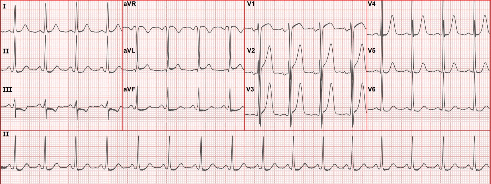
Nhịp xoang, tần số ngay dưới 100 lần/phút. QRS có điện thế lớn hướng sang trái, phù hợp với LVH hơn là chỉ điện thế cao ở người trẻ khỏe mạnh. Có ST chênh lên (STE) lớn ở V1-V3, cũng như ở aVL. Có ST chênh xuống (STD) ở V5-6, II, III và aVF. Sóng T ở V1-V4 có thể là tối cấp (hyperacute), còn chưa chắc, nhưng QRS cũng rất cao và ấn tượng. Chúng tôi có rất ít ca LVH với điện thế lớn đồng thời có sóng T tối cấp ở thành trước, nhưng điều đáng lo là đây có thể là một trong số đó. Một điện tâm đồ nền sẽ giúp ích rất nhiều (có ở bên dưới).
Công thức phân biệt OMI LAD kín đáo với ST chênh lên biến thể bình thường (subtle LAD OMI vs. normal variant STE formula) không áp dụng được do có STD soi gương ở thành dưới và STD ở thành bên, và vì công thức này không được huấn luyện trên bệnh nhân LVH.
Nếu bạn áp dụng nhầm công thức, kết quả sẽ trấn an một cách sai lầm do điện thế QRS lớn trong ca này:

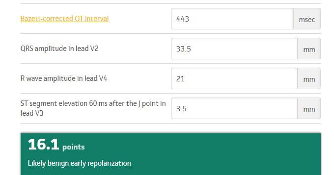
Có sẵn một điện tâm đồ nền trước đó (dù tôi nghi rằng nó không có trong tay khi EMS hỏi để ra quyết định trước viện dựa trên điện tâm đồ ở trên):

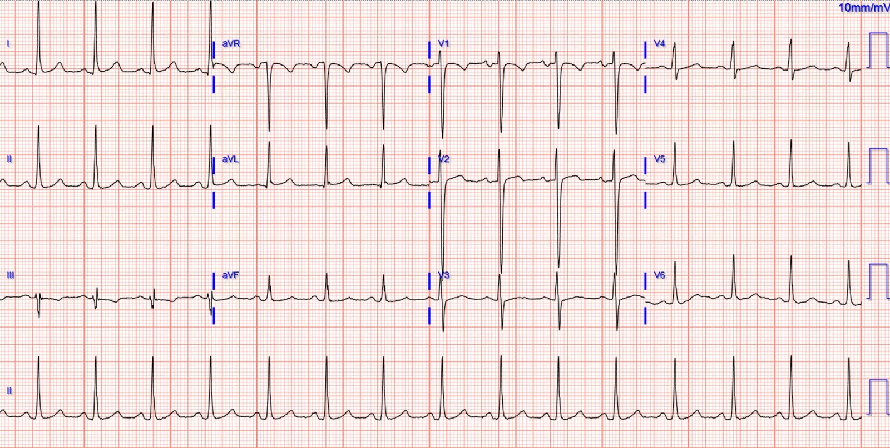

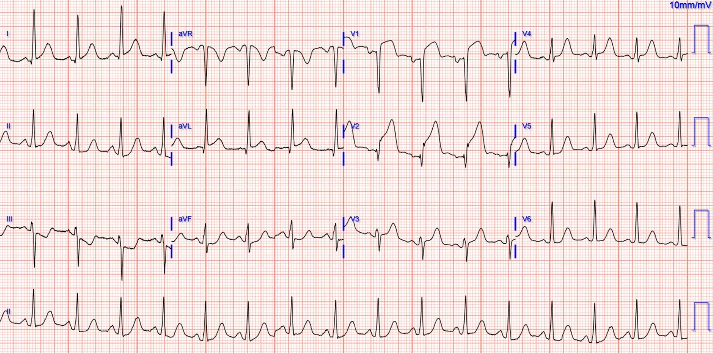
Theo báo cáo, siêu âm tim tại khoa cấp cứu cho thấy rối loạn vận động thành trước và EF giảm nặng.
“Do bệnh nhân thay đổi tình trạng ý thức, đã chỉ định chụp CT mạch máu (CTA) ngực để loại trừ bóc tách.”
Ghi chú của Meyers: Tôi nghĩ chụp CT mạch máu để tìm bóc tách là không cần thiết trong ca này, cũng như trong hầu hết mọi ca OMI. Như Jesse McLaren đã chỉ ra cho tôi, STEMI hoặc OMI thứ phát do bóc tách rất hiếm (https://pubmed.ncbi.nlm.nih.gov/28511806/), vì vậy đi tìm nó khi không có lý do thuyết phục (ví dụ dấu hiệu thần kinh khu trú hoặc mất mạch) sẽ chỉ làm chậm tái tưới máu (https://pubmed.ncbi.nlm.nih.gov/22534052/).
“Khi đang ở máy chụp CT, bệnh nhân mất mạch và dường như ngừng tim do VT đa dạng, sau đó tái lập tuần hoàn tự nhiên (ROSC) ngay sau một lần khử rung.”
Troponin I độ nhạy cao ban đầu trả về 34 ng/L.
CT không thấy bóc tách.
Bệnh nhân được đưa đi thông tim, phát hiện tắc hoàn toàn do huyết khối ở LAD đoạn gần (xem hình bên dưới).

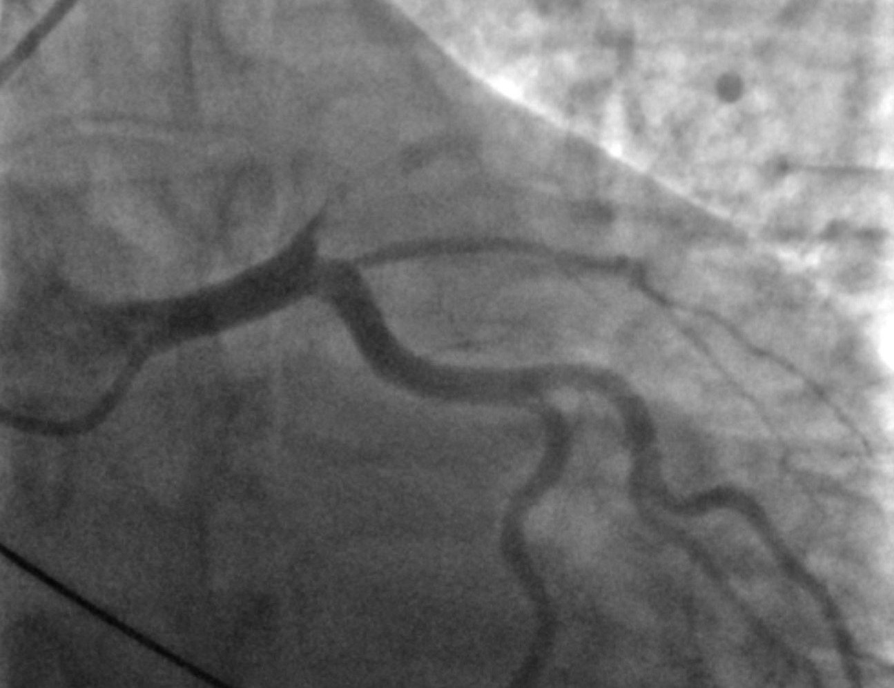

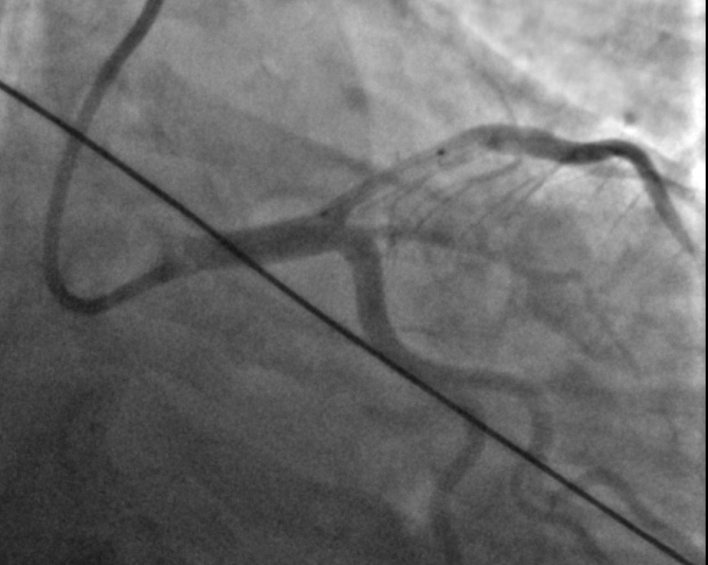

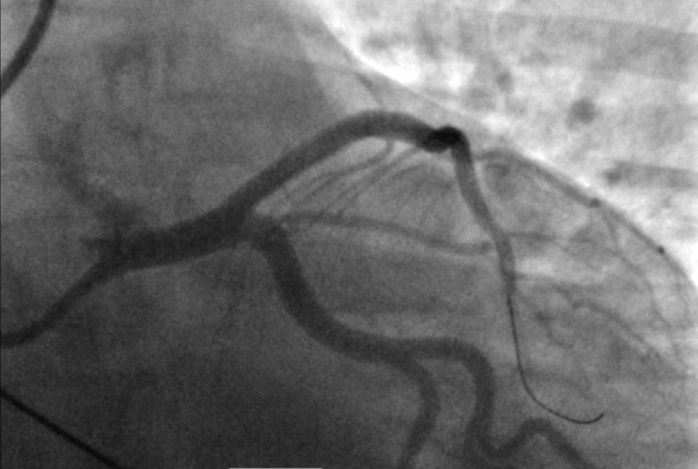
Điện tâm đồ vài giờ sau PCI:

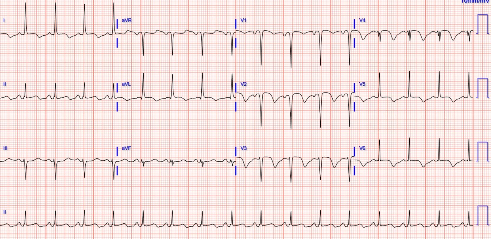
Điện tâm đồ ngày hôm sau:

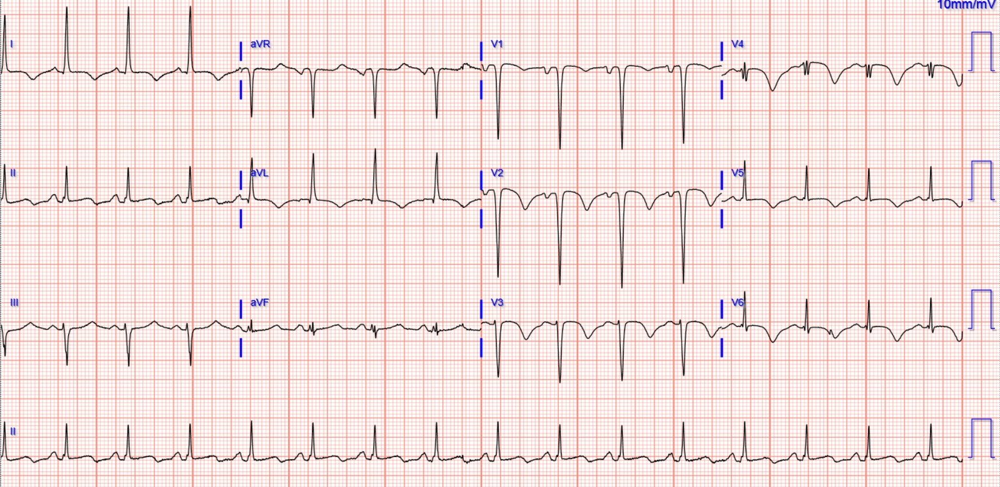
Troponin đạt đỉnh 23,591 ng/L.
MRI tim thực hiện 5 ngày sau đó:
EF 35%. Giảm động nặng toàn bộ vách liên thất, thành trước và các phân đoạn xa/mỏm. Không có huyết khối thất trái.
Những điểm cần học:
LVH có thể khiến việc diễn giải OMI khó khăn hơn. Hiếm khi thấy điện thế LVH cao ở cùng các chuyển đạo có OMI. Nhưng ca này là một ví dụ tuyệt vời.
Troponin đầu tiên ở mức tối thiểu khi lợi ích của tái tưới máu là tối đa.
So sánh với điện tâm đồ nền và các điện tâm đồ liên tiếp có thể biến một ca khó diễn giải thành dễ.
Ngất đột ngột hoặc “co giật” ở bệnh nhân nặng nên được coi là ngừng tim cho đến khi chứng minh được điều ngược lại.
Người trẻ và phụ nữ vẫn bị OMI, và cũng như các nhóm dân số khác, họ có thể bị nhận diện chậm trễ.
OMI luôn tiến triển trên điện tâm đồ, nếu bạn có các điện tâm đồ để thấy điều đó.
Phụ nữ trẻ thực sự vẫn bị tắc mạch vành do huyết khối!!

===================================
BÌNH LUẬN CỦA TÔI, bởi KEN GRAUER, MD (15/8/2022):
===================================
Tôi đã xem bản ghi ban đầu trong ca hôm nay ( = điện tâm đồ #1) — chỉ biết rằng bệnh nhân là một phụ nữ ở độ tuổi 30 đang trên đường đến khoa cấp cứu. Tôi cho rằng hẳn cô ấy đang đau ngực — nhưng không biết bệnh sử đáng lo ngại đến mức nào (hay không đáng lo) đối với một biến cố tim mới. Tôi tập trung bình luận vào bản ghi ban đầu này — mà để cho rõ, tôi đã in lại bên dưới trong Hình 1. Suy nghĩ của tôi về điện tâm đồ ban đầu này như sau:
- Nhịp là nhịp xoang, tần số ~90-95 lần/phút. Các khoảng (PR, QRS, QTc) và trục mặt phẳng trán bình thường (khoảng +20 độ).
- Biên độ QRS tăng rất nhiều — đặc biệt ở các chuyển đạo ngực, nơi các phức bộ “chồng lấn giữa các chuyển đạo” (lead overlap) đáng kể.
Về Thay đổi Q–R–S–T:
- Có sóng Q nhỏ và hẹp ở các chuyển đạo bên (I,aVL,V5,V6) — gần như chắc chắn là sóng q vách bình thường.
- Tăng tiến sóng R bình thường (vùng chuyển tiếp xảy ra đúng chỗ, giữa V2 và V3).
Câu hỏi MẤU CHỐT là liệu hình dạng sóng ST-T ở điện tâm đồ #1 có (hay không) gợi ý một biến cố tim cấp.

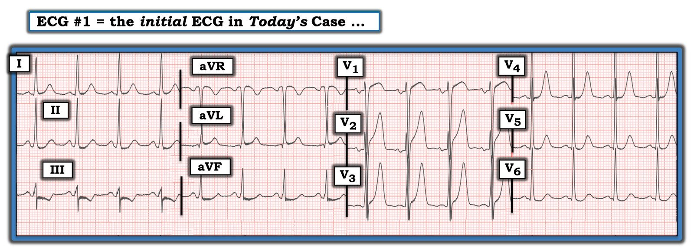
Có nên kích hoạt phòng thông tim không?
Như BS. Meyers đã nhấn mạnh — việc đánh giá điện tâm đồ ban đầu trong ca hôm nay bị phức tạp bởi sự hiện diện của LVH. Đơn giản là không thường gặp hình ảnh biên độ QRS tăng rõ rệt đi kèm với sóng T tối cấp ở các chuyển đạo trước.
- BS. Meyers cũng nhấn mạnh rằng đôi khi — tìm được một bản ghi nền của bệnh nhân để so sánh có thể mang tính chẩn đoán. Bệnh nhân hôm nay là một trường hợp như vậy — vì chỉ cần so sánh nhanh với điện tâm đồ trước đó là KHÔNG còn nghi ngờ gì rằng sóng ST-T nhọn ở các chuyển đạo ngực trong điện tâm đồ #1 là một dấu hiệu mới (và do đó là cấp tính). Đáng tiếc, điện tâm đồ nền không phải lúc nào cũng có sẵn vào thời điểm cần cho quyết định phân loại ban đầu về việc có kích hoạt phòng thông tim hay không. Vậy nên xử trí THẾ NÀO?
Tôi xin chỉ ra những điều sau.
- Có rất nhiều tiêu chuẩn điện tâm đồ để chẩn đoán LVH. Tôi liệt kê những tiêu chuẩn tôi ưa dùng trong Hình 2 — và bàn chi tiết cách tiếp cận của tôi đối với chẩn đoán LVH trên điện tâm đồ tại ĐƯỜNG LINK NÀY.
- Lưu ý việc bổ sung tuổi của bệnh nhân vào các tiêu chuẩn tôi đề xuất trong Hình 2. Lý do đưa tuổi vào — là người trưởng thành trẻ tuổi thường biểu hiện biên độ QRS tăng trên điện tâm đồ mà không có LVH thực sự của buồng tim. Dù không có một “điểm phân chia tuổi tối đa” rời rạc nào được thống nhất rộng rãi — theo kinh nghiệm qua nhiều thập kỷ, tôi thấy mốc ~35 tuổi vận dụng tốt trên lâm sàng.
- Con số “35” này giúp dễ nhớ — bởi vì, trong số 50+ tiêu chuẩn LVH trong y văn — tiêu chuẩn nhạy và đặc hiệu nhất, vượt trội hẳn theo kinh nghiệm của tôi, cũng liên quan đến con số “35” (tức là, Tổng của S sâu nhất ở V1 hoặc V2 + R cao nhất ở V5 hoặc V6 ≥35 mm thỏa tiêu chuẩn điện thế cho LVH ở người trưởng thành ≥35 tuổi).
- Đánh giá LVH ở trẻ em là vấn đề nan giải — vì khó xác định tiêu chuẩn điện thế chẩn đoán đáng tin cậy cho từng nhóm tuổi (càng phức tạp thêm bởi các vấn đề kỹ thuật trong việc bảo đảm đặt điện cực ngực chính xác ở những bệnh nhân khung người nhỏ này). Vì vậy — tôi thường xuyên tra bảng để đánh giá biên độ tối đa dự kiến cho từng nhóm tuổi cụ thể.
- Để “đơn giản hóa cuộc sống” khi đánh giá LVH ở người trưởng thành trẻ tuổi (tức là, bệnh nhân ở cuối tuổi thiếu niên, tuổi 20 và đầu tuổi 30) — qua nhiều năm tôi nhận thấy đảo ngược con số “35” cho ta một tiêu chuẩn “ước lượng” nhanh để xét xem điện tâm đồ của một người trưởng thành trẻ tuổi (tức là, dưới 35 tuổi) có đủ điện thế để đạt tiêu chuẩn “LVH” (tức là, Tổng của S sâu nhất ở V1 hoặc V2 + R cao nhất ở V5 hoặc V6 ≥53 mm) hay không.

Hình 1 có đủ điện thế cho LVH không?
Bệnh nhân trong ca hôm nay là một phụ nữ ở độ tuổi 30 — do đó nhiều khả năng biểu hiện biên độ QRS tăng mà không nhất thiết do LVH. Trước khó khăn do hiện tượng “chồng lấn biên độ” gây nhầm lẫn ở các chuyển đạo ngực trong Hình 1 — tôi làm rõ giới hạn của các sóng lệch QRS bằng cách tô màu các phức bộ trong Hình 3.
- Lưu ý rằng ngay cả khi tính đến việc bệnh nhân hôm nay là người trưởng thành trẻ tuổi — ngưỡng tiêu chuẩn 53 mm vẫn đạt được, gợi ý có điện thế thực sự của LVH ở bệnh nhân thuộc nhóm tuổi trẻ này.
- Hãy nhớ: Điện tâm đồ là một công cụ không hoàn hảo để đánh giá LVH. Nếu cần biết kích thước thực của buồng tim — thì siêu âm tim (vốn cũng cung cấp thông tin về chức năng tim) vượt trội hơn hẳn điện tâm đồ trong đánh giá lớn các buồng tim. Dù vậy — “khả năng trước khi đọc điện tâm đồ” đối với LVH rõ ràng tăng lên ở bệnh nhân hôm nay do bị đái tháo đường lâu năm.

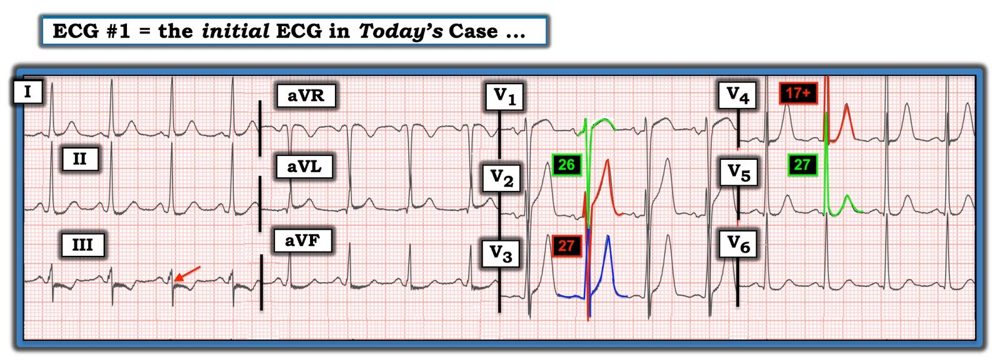
Nhìn lần cuối điện tâm đồ ở Hình 1:
Tôi hoàn toàn thừa nhận rằng khi xem điện tâm đồ ban đầu ở Hình 1, tôi không hề chắc chắn liệu bệnh nhân này có (hay không) đang có một biến cố cấp. Những điểm chống lại một biến cố cấp là:
- Bệnh nhân có LVH trên điện tâm đồ — và như chúng tôi đã đề cập, không thường gặp sóng T tối cấp ở các chuyển đạo trước đi kèm LVH rõ rệt. Trong số các loại biến thể tái cực lành tính có hiện tượng sóng T nhọn, thường cao đến bất ngờ ở các chuyển đạo trước có sóng S sâu.
- Có tăng tiến sóng R rất tốt — với sóng R cực cao ở chuyển đạo V3 (biên độ sóng R thường giảm khi có OMI thành trước).
- QTc nhiều nhất chỉ kéo dài tối thiểu (trong khi nhồi máu cấp thường gây QTc kéo dài đáng kể).
Mặt khác — những điểm nghiêng về một biến cố cấp, cho đến khi chứng minh được điều ngược lại, là:
- Mặc dù bệnh nhân trong ca hôm nay là người trưởng thành trẻ tuổi — người phụ nữ ở độ tuổi 30 này bị đái tháo đường (có lẽ đã một thời gian) — do đó cô ấy rõ ràng có nguy cơ cao hơn bị nhồi máu cơ tim ở độ tuổi sớm hơn.
- Ngay cả khi tính đến LVH — sóng T ở các chuyển đạo ngực trước vẫn cao hơn mức thường gặp. Điều này đặc biệt đúng ở chuyển đạo V3 — nơi sóng T cao 15 mm gần cao bằng sóng R ở chuyển đạo này. “Hình dạng” của “tăng gánh” thất trái khi thấy ở các chuyển đạo trước thường là hình soi gương ngược lại của dạng ST chênh xuống dốc xuống chậm–dốc lên nhanh hơn, vốn thường thấy ở V5,V6 khi có LVH. Thấy một sóng T cao, nhọn, đáy hẹp do LVH như ở chuyển đạo V3 là điều bất thường.
- Các chuyển đạo V2 và V4 lân cận cũng có vẻ cao và nhọn hơn mức thường thấy với LVH hoặc với các biến thể khử cực.
- Cuối cùng, dù đoạn ST-T bình thường có thể âm ở chuyển đạo III khi QRS chủ yếu âm — thường không có điểm J chênh xuống như thấy ở Hình 3 (mũi tên ĐỎ ở chuyển đạo III).
ĐIỀU CỐT LÕI: Người phụ nữ trẻ ở độ tuổi 30 này bị đái tháo đường — và đến viện với bệnh sử “đau ngực ngày càng nặng”. Dù từ điện tâm đồ ban đầu tôi không chắc liệu có một quá trình cấp tính đang diễn ra hay không — bệnh sử đáng lo ngại và các đặc điểm điện tâm đồ đáng ngờ nêu trên kết hợp lại rõ ràng đủ để chụp mạch vành chẩn đoán nhằm làm rõ giải phẫu.
- Xin nhấn mạnh: Một khi đã có điện tâm đồ trước đó để so sánh — không còn nghi ngờ gì nữa rằng các dấu hiệu điện tâm đồ nêu trên là cấp tính!